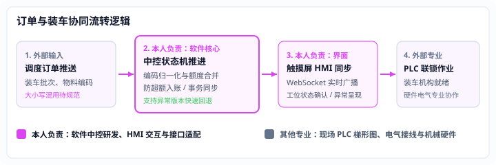

数字月台
已上线已验收
把订单、界面与设备连接起来
面向工厂自动装车场景，承担工业中控软件系统的需求拆解、状态机搭建与各端联调。连接企业调度、多工位操作触摸屏与现场 PLC 设备。

Workflow & Boundaries
业务协同流程与专业分工
中控系统统一维护订单状态机，通过 WebSocket 向多终端实时广播，并与 PLC 设备信号交互闭环。

本人负责软件范围
中控服务与多端 HMI
- 中控业务服务：基于 Node.js / Fastify 构建核心状态机，实现订单流转控制与数据持久化。
- 多端 HMI 界面：基于 React 与 TypeScript 开发工位触摸屏交互，负责订单呈现与人工确认。
- 系统协议对接：负责软件侧与企业调度系统、PLC 及人脸识别桥接服务的接口设计与联调。
外部专业协作范围
硬件、PLC 与现场实施
- PLC 控制程序：由公司自动化电气专业人员编写，本人负责网络层 SLMP 信号交互与超时保护。
- 电气接线与机械硬件：现场传感器、输送滚筒与装车机构由机械电气团队负责安装与物理调试。
- 生产组织：现场装车调度规则与司机刷卡由厂区运营部门制定与推行。
Facts & Verification
实现内容与验证状态
基于实际代码实现与现场运行情况，客观呈现系统能力与证据边界。
| 模块 / 机制 | 具体实现内容 | 当前验证状态 |
|---|---|---|
| 订单全局状态机 | 统一维护订单各工位生命周期，各终端状态变更经由中控服务权威广播，防止多端状态不一致。 | 已上线运行 |
| 版本回退支持 | 制定标准化部署流程，在生产环境遇到非预期异常时支持快速回滚至上一稳定版本。 | 架构已支持 |
| 物料归一化与额度校验 | 修复调度推送大小写混用问题，并在仓储入账路径执行归一化合并，增加剩余额度校验防止超额入账。 | 单测 458 项全通 |
| 异常隔离与容错 | 人脸识别与第三方硬件桥接服务采用独立子进程启动，硬件中断不影响中控核心服务。 | 已上线运行 |
客观事实与边界说明：系统目前处于已上线已验收状态，多终端 HMI 协同中控系统已在客户自动化装车生产线正式投入运行。本轮不使用实际部署数量指标；系统运行受现场工况与各方设备接口约束，未作未经审计的无故障运行承诺。
技术栈：Node.js ｜ Fastify ｜ TypeScript ｜ React ｜ PostgreSQL ｜ WebSocket ｜ SLMP PLC Protocol